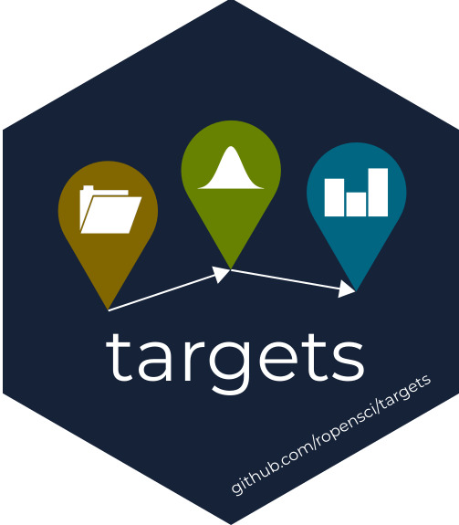
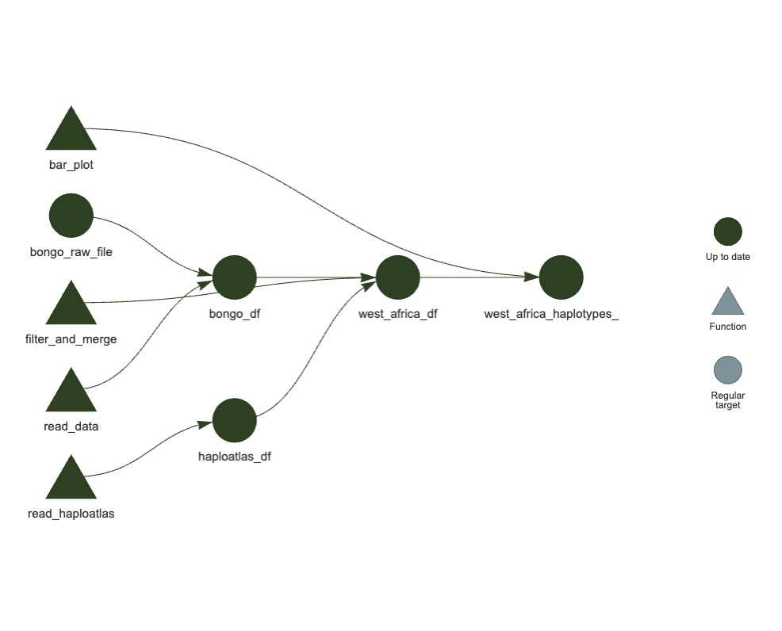
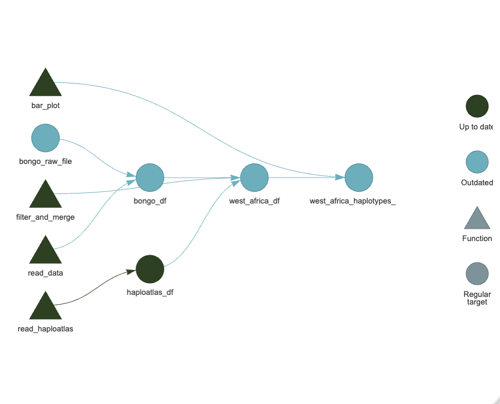

dhfr_Pf8 <- read.csv(here::here("data/sample_summary/pf-haploatlas-PF3D7_0417200_sample_summary.csv"))[,-1] %>% mutate(Gene = "pfdhfr")
mdr1_Pf8 <- read.csv(here::here("data/sample_summary/pf-haploatlas-PF3D7_0523000_sample_summary.csv"))[,-1] %>% mutate(Gene = "pfmdr1")
aat1_Pf8 <- read.csv(here::here("data/sample_summary/pf-haploatlas-PF3D7_0629500_sample_summary.csv"))[,-1] %>% mutate(Gene = "pfaat1")
crt_Pf8 <- read.csv(here::here("data/sample_summary/pf-haploatlas-PF3D7_0709000_sample_summary.csv"))[,-1] %>% mutate(Gene = "pfcrt")
dhps_Pf8 <- read.csv(here::here("data/sample_summary/pf-haploatlas-PF3D7_0810800_sample_summary.csv"))[,-1] %>% mutate(Gene = "pfdhps")
K13_Pf8 <- read.csv(here::here("data/sample_summary/pf-haploatlas-PF3D7_1343700_sample_summary.csv"))[,-1] %>% mutate(Gene = "pfK13")
pfs47_Pf8 <- read.csv(here::here("data/sample_summary/pf-haploatlas-PF3D7_1346800_sample_summary.csv"))[,-1] %>% mutate(Gene = "pfs47")
read_haploatlas <- function(df){
this_Gene <- unique(df$Gene) # assumes only one Gene per df
max_splits <- max(str_count(df$ns_changes, "/")) + 1 # Identify how many mutations in total dataset
df_qc <- df %>%
# Keep only samples that passed QC and are not excluded
dplyr::filter(QC.pass == "True", HaploAtlas.exclusion.reason == "Analysis_set") %>%
# Keep only Country-Year groups with ≥25 samples
dplyr::group_by(Population, Country, Year) %>%
dplyr::filter(dplyr::n() >= 25) %>%
dplyr::ungroup() %>%
# Process haplotypes
tidyr::separate(ns_changes, into = paste0("ns_change_", 1:max_splits), sep = "/", fill = "right") %>%
tidyr::pivot_longer(-c(Sample:HaploAtlas.exclusion.reason, Gene), names_to = "changes", values_to = "ns_changes") %>%
dplyr::mutate(pos = str_extract(ns_changes, "\\d+")) %>%
dplyr::filter(!(is.na(ns_changes) & is.na(pos))) %>%
dplyr::select(-changes) %>%
tidyr::pivot_wider(id_cols = c(Sample:HaploAtlas.exclusion.reason, Gene), names_from = pos, values_from = ns_changes)
if (this_Gene == "pfdhfr"){
df1 <- df_qc %>%
select(Sample:HaploAtlas.exclusion.reason, `50`, `51`, `59`, `108`, `164`, Gene) %>%
unite(ns_changes, c(`50`, `51`, `59`, `108`, `164`), sep = "/", na.rm = TRUE) %>%
mutate(Marker = "dhfr")
df_final <- df1
} else if (this_Gene == "pfmdr1"){
df1 <- df_qc %>%
select(Sample:HaploAtlas.exclusion.reason, `86`, `184`, Gene) %>%
unite(ns_changes, c(`86`, `184`), sep = "/", na.rm = TRUE) %>%
mutate(Marker = "mdr11")
df2 <- df_qc %>%
select(Sample:HaploAtlas.exclusion.reason, `1034`, `1042`, Gene) %>%
unite(ns_changes, c(`1034`, `1042`), sep = "/", na.rm = TRUE) %>%
mutate(Marker = "mdr12")
df3 <- df_qc %>%
select(Sample:HaploAtlas.exclusion.reason, `1246`, Gene) %>%
unite(ns_changes, c(`1246`), sep = "/", na.rm = TRUE) %>%
mutate(Marker = "mdr13")
df_final <- bind_rows(df1, df2, df3)
} else if (this_Gene == "pfaat1"){
df1 <- df_qc %>%
select(Sample:HaploAtlas.exclusion.reason, `258`, `313`, Gene) %>%
unite(ns_changes, c(`258`, `313`), sep = "/", na.rm = TRUE) %>%
mutate(Marker = "aat1")
df_final <- df1
} else if (this_Gene == "pfcrt"){
df1 <- df_qc %>%
select(Sample:HaploAtlas.exclusion.reason, `72`, `74`, `75`, `76`, Gene) %>%
unite(ns_changes, c(`72`, `74`, `75`, `76`), sep = "/", na.rm = TRUE) %>%
mutate(Marker = "crt")
df_final <- df1
} else if (this_Gene == "pfdhps"){
df1 <- df_qc %>%
select(Sample:HaploAtlas.exclusion.reason, `431`, `436`, `437`, Gene) %>%
unite(ns_changes, c(`431`, `436`, `437`), sep = "/", na.rm = TRUE) %>%
mutate(Marker = "dhps1")
df2 <- df_qc %>%
select(Sample:HaploAtlas.exclusion.reason, `540`, `581`, `613`, Gene) %>%
unite(ns_changes, c(`540`, `581`, `613`), sep = "/", na.rm = TRUE) %>%
mutate(Marker = "dhps2")
df_final <- bind_rows(df1, df2)
}
df_final <- df_final %>% dplyr::mutate(ns_changes = ifelse(ns_changes == "" | is.na(ns_changes), "WT", ns_changes))
return(df_final)
}
all_pop_data <- bind_rows(
read_haploatlas(dhfr_Pf8),
read_haploatlas(dhps_Pf8),
read_haploatlas(crt_Pf8),
read_haploatlas(mdr1_Pf8),
read_haploatlas(aat1_Pf8)
)
all_pop_data_1 <- all_pop_data %>%
# Filter for countries that have data for ALL Markers
group_by(Country, Year) %>%
filter(n_distinct(Marker) == n_distinct(all_pop_data$Marker)) %>%
ungroup() %>%
# Filter for the latest year available per country
group_by(Country, Marker) %>%
filter(Year == max(Year, na.rm = TRUE)) %>%
ungroup()
# join all samples together
# Dataset to compare countries only when Population == "AF-W"
WAFR_data_summarised <- all_pop_data_1 %>%
filter(Population == "AF-W") %>%
summarise(n = n(), .by = c(Country, Year, Gene, Marker, ns_changes)) %>%
group_by(Country, Year, Marker) %>%
mutate(
Total = sum(n),
prop = n / Total
)
# compare samples
WAFR_data_summarised_plot <- WAFR_data_summarised %>%
mutate(
Country_Year = paste0(Country,"\n", Year),
Country_Year = factor(
Country_Year,
levels = c("Ghana\n2019", "Benin\n2016", "Nigeria\n2020", "Côte d'Ivoire\n2013",
"Mali\n2016", "Guinea\n2011", "Senegal\n2015", "Gambia\n2017", "Mauritania\n2014",
"Cameroon\n2013", "Gabon\n2014")
),
Marker = factor(
Marker,
levels = c("aat1", "crt", "mdr11", "mdr12", "mdr13", "dhfr", "dhps1", "dhps2")
)
) %>% ungroup()
WAFR_data_summarised_plot %>%
filter(!c(Marker %in% c("mdr12", "mdr13"))) %>%
ggplot(aes(x = Country_Year, y = prop, fill = ns_changes)) +
geom_bar(stat = "identity", width = 1, colour = "white") +
facet_wrap(~Marker) +
theme(legend.position = "none", axis.text.x = element_text(angle = 45, hjust = 1))Pipelines with {targets}

The {targets} R package is a tool to:
- Run code in a “pipeline”: step-by-step with one command
- Automatic caching
- Automatic detection and visualisation of steps dependencies
- Automatic detection of changes in data and/or code
- Uses parallel computing
- Perform your analysis
- Keep up to date with minor and major changes
- Make your analyses reproducible
Case Study: Pf-HaploAtlas
The Plasmodium falciparum Haplotype Atlas (or Pf-HaploAtlas) is a user-friendly way to study and track genetic mutations across any gene in the P. falciparum genome!
Currently, the app uses the MalariaGEN repository Pf8 database containing 24,409 QC-passed samples, from 34 countries, and spread between the years 1966 and 2022, facilitating comprehensive spatial and temporal analyses of genes and variants of interest.
Here’s my current code pipeline …
Step 1: Turn your code into functions
Don’t forget to document your functions! ({roxygen}-style)
#' Read and clean data
#'
#' Reads in the haplotype data, renames and selects relevant columns. The
#' following transformations are applied to the data:
#' * only keep S8 data
#' * replace special characters ; to / in line with Pf-haploatlas data
#' * summarise prevalence of non-synonymous changes
#' * remove K13 and pfs47 data
#'
#' @param file_path Character, path to Bongo haplotype data for Bongo MRS study (.csv file).
#' @param survey_name Survey to filter analysis by. Default = S8.
#' @param year Optional variable to label year by. Default = 2020.
#' @param location Optional variable to label location. Default = Bongo, Ghana.
#' @returns A tibble.
#' @author Dionne Argyropoulos
read_data <- function(file_path, survey_name = "S8", year = 2020, location = "Bongo, Ghana") {
read_csv(here::here(file_path)) %>%
dplyr::filter(Survey == survey_name) %>%
dplyr::mutate(
## modifying columns
) %>%
dplyr::summarise(n = dplyr::n(), .by = c(Marker, ns_changes)) %>%
dplyr::group_by(Marker) %>%
dplyr::mutate(
## modifying columns
) %>%
dplyr::ungroup() %>%
dplyr::filter(
## remove unnecessary rows
) %>%
dplyr::select(
## relevant columns
)
}Improved script:
R/helper_functions.R
#' Read and clean data
#'
#' ...
read_data <- function(file_path) { ... }
#' Read and filter Pf-Haploatlas Data
#'
#' ...
read_haploatlas <- function(file_paths) { ... }
#' Join Bongo and Pf-Haploatlas data, filter for countries in West Africa
#'
#' ...
filter_and_merge <- function(df1, df2, region = "AF-W") { ... }
#' Bar Plot of Haplotype prevalence
#'
#' ...
bar_plot <- function(df) { ... }analysis/first_script.R
library(here)
source(here("R/helper_functions.R"))
bongo_df <- read_data(
here("data/bongo_results/S7810_all_MH_Epi.csv")
)
haploatlas_df <- read_haploatlas(
file_paths = c(
"data/sample_summary/pf-haploatlas-PF3D7_0417200_sample_summary.csv",
"data/sample_summary/pf-haploatlas-PF3D7_0810800_sample_summary.csv",
"data/sample_summary/pf-haploatlas-PF3D7_0709000_sample_summary.csv",
"data/sample_summary/pf-haploatlas-PF3D7_0523000_sample_summary.csv",
"data/sample_summary/pf-haploatlas-PF3D7_0629500_sample_summary.csv"
),
gene_names = c("pfdhfr", "pfdhps", "pfcrt", "pfmdr1", "pfaat1")
)
west_africa_df <- filter_and_merge(
bongo_df,
haploatlas_df,
region = "AF-W"
)
west_africa_haplotypes_plot <- bar_plot(
west_africa_df
)Step 2: Turn your main script into a {targets} pipeline!
library(targets)
library(here)
library(tidyverse)
source(here("R/helper_functions.R"))
list(
tar_target(bongo_raw_file, here("data/bongo_results/S7810_all_MH_Epi.csv"), format = "file"),
tar_target(penguins_df, read_data(penguins_raw_file)),
tar_target(pf_haploatlas_raw_files,
c(
"data/sample_summary/pf-haploatlas-PF3D7_0417200_sample_summary.csv",
"data/sample_summary/pf-haploatlas-PF3D7_0810800_sample_summary.csv",
"data/sample_summary/pf-haploatlas-PF3D7_0709000_sample_summary.csv",
"data/sample_summary/pf-haploatlas-PF3D7_0523000_sample_summary.csv",
"data/sample_summary/pf-haploatlas-PF3D7_0629500_sample_summary.csv"
),
format = "file"
),
tar_target(pf_haploatlas_raw_files, read_haploatlas(pf_haploatlas_raw_files, gene_names = c("pfdhfr", "pfdhps", "pfcrt", "pfmdr1", "pfaat1"))),
tar_target(west_africa_df, filter_and_merge(bongo_df, haploatlas_df, region = "AF-W")),
tar_target(west_africa_haplotypes_plot, bar_plot(west_africa_df))
)Visualise your pipeline
In the console, run:
targets::tar_visnetwork()
Execute your pipeline
In the console, run:
targets::tar_make()
here() starts at /Users/Dionne/Library/CloudStorage/OneDrive-wehi.edu.au/2_Projects/Lab_Jex/targets_tutorial
+ pf_haploatlas_raw_files dispatched
✔ pf_haploatlas_raw_files completed [0ms, 36.77 MB]
+ bongo_raw_file dispatched
✔ bongo_raw_file completed [0ms, 9.54 MB]
+ bongo_df dispatched
✔ bongo_df completed [1.2s, 744 B]
+ west_africa_df dispatched
✔ west_africa_df completed [0ms, 744 B]
+ west_africa_haplotypes_plot dispatched
✔ west_africa_haplotypes_plot completed [0ms, 744 B]
✔ ended pipeline [1.3s, 5 completed, 0 skipped]Get the pipeline results
targets::tar_read(west_africa_haplotypes_plot)
Change in a step
Hi Dionne,
Great work! Just a minor comment, could you change the colours bar-plot? It’s hard to see the difference between the haplotypes
R/helper_functions.R
plot_bill_length_depth <- function(df) {
df %>%
ggplot(aes(x = Country_Year, y = prop, fill = ns_changes)) +
geom_bar(stat = "identity", width = 1, colour = "white") +
scale_fill_manual(values = colour_palette_for_drugr) +
facet_wrap(~Marker) +
theme(legend.position = "none", axis.text.x = element_text(angle = 45, hjust = 1))
}targets::tar_make()
here() starts at /Users/Dionne/Library/CloudStorage/OneDrive-wehi.edu.au/2_Projects/Lab_Jex/targets_tutorial
+ west_africa_haplotypes_plot dispatched
✔ west_africa_haplotypes_plot completed [62ms, 293.62 kB]
✔ ended pipeline [248ms, 1 completed, 4 skipped]targets::tar_read(west_africa_haplotypes_plot)
Change in the data
Hi Dionne,
Oopsie! We realised there was a mistake in the original data Bongo file. Here is the updated spreadsheet, could you re-run the analysis with this version?
targets::tar_visnetwork()
Aside: where should my targets script live?
default would be in the
_targets.Rfile in the main directoryto choose a custom folder and file name, need to specify targets configuration:
In the console, run (from main directory):
targets::tar_config_set(script = "analysis/_targets.R", store = "analysis/_targets")Will create a _targets.yaml file:
_target.yaml
main:
script: analysis/_targets.R
store: analysis/_targets